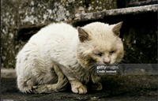
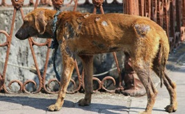
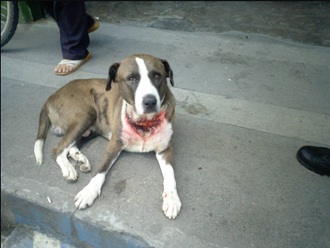

Informacion

Causas
El maltrato animal es multifactorial y no tiene una sola raíz. Combina elementos individuales, culturales, económicos y sociales:
Falta de educación y empatía: Muchas personas desconocen las necesidades básicas de los animales (físicas, emocionales y etológicas). Adoptan o compran mascotas por impulso (modas, regalos) y luego no pueden o no quieren asumir la responsabilidad.
Factores culturales y tradicionales: Prácticas normalizadas como peleas de gallos, corridas de toros, uso de animales en circos, rodeos o fiestas patronales que priorizan el entretenimiento humano sobre el sufrimiento.
Explotación económica: En granjas industriales, criaderos ilegales, transporte de carga o turismo animal (elefantes, camellos, caballos de calandrias), se priorizan las ganancias sobre el bienestar, generando hacinamiento, sobreexplotación y condiciones insalubres.

Consecuencias
Las repercusiones son profundas y se extienden más allá del animal:
Sufrimiento físico crónico, lesiones irreversibles, enfermedades y muerte prematura.
Daño psicológico: trastornos de estrés postraumático, ansiedad permanente, problemas de socialización o agresividad adquirida
Reducción drástica de calidad y esperanza de vida.
Fuerte vínculo con violencia interpersonal: El maltrato animal es un predictor y marcador de violencia doméstica, abuso infantil y crímenes violentos. Estudios muestran que hasta el 71% de mujeres en refugios reportan que su agresor también maltrataba o amenazaba a sus mascotas para controlarla. Los niños que presencian o cometen maltrato animal tienen mayor riesgo de volverse agresores en la adultez.
Riesgos de salud pública: zoonosis, rabia, proliferación de enfermedades por condiciones insalubres.
mpacto ambiental: en animales silvestres, contribuye a pérdida de biodiversidad.

Prevención
La forma más efectiva de combatir el maltrato es prevenirlo. Requiere un cambio cultural, educativo y estructural:
Educación y sensibilización desde la infancia: Incluir en escuelas y familias el respeto a los animales como seres sintientes y las cinco libertades. Campañas públicas que muestren las consecuencias del maltrato y su vínculo con la violencia social.
Educación y sensibilización desde la infancia: Incluir en escuelas y familias el respeto a los animales como seres sintientes y las cinco libertades. Campañas públicas que muestren las consecuencias del maltrato y su vínculo con la violencia social.
Esterilización masiva y control poblacional: Apoyar campañas gratuitas o de bajo costo de esterilización para reducir el número de animales en situación de calle y el sufrimiento asociado.
Marco Legal
El maltrato animal está regulado por leyes en la mayoría de los países, aunque su aplicación suele ser insuficiente:
En muchos países de Latinoamérica y España existe una Ley de Protección Animal que tipifica el maltrato como delito.
Las sanciones pueden incluir multas económicas, trabajo comunitario, prohibición de tener animales y, en casos graves, penas de cárcel.
Sin embargo, uno de los principales problemas es la falta de aplicación efectiva de las leyes y la escasa capacitación de las autoridades.
En algunos lugares se están impulsando reformas para considerar a los animales como seres sintientes en el código civil, lo que fortalece su protección legal.
En muchos países se puede denunciar de forma anónima a través de aplicaciones o portales web de las autoridades.
Cómo Denunciar el Maltrato Animal
Denunciar es una de las acciones más importantes que puede hacer cualquier persona:
Llamar a la policía o fiscalía de tu zona.
Contactar a las protectoras de animales locales o refugios.
Usar líneas de denuncia anónima cuando existan.
Tomar evidencia (fotos, videos, testigos) siempre que sea posible y seguro.
Qué Puedes Hacer Tú
El cambio también depende de las acciones individuales:
En muchos países de Latinoamérica y España existe una Ley de Protección Animal que tipifica el maltrato como delito.
No comprar animales en tiendas ni apoyar criaderos.
Adoptar en lugar de comprar.
Esterilizar a tus mascotas.
Educar a niños y personas cercanas sobre el respeto a los animales.
Apoyar económicamente o como voluntario a organizaciones de protección animal.
Compartir información y campañas de concientización en redes sociales.
Denunciar cualquier caso de maltrato que presencies.